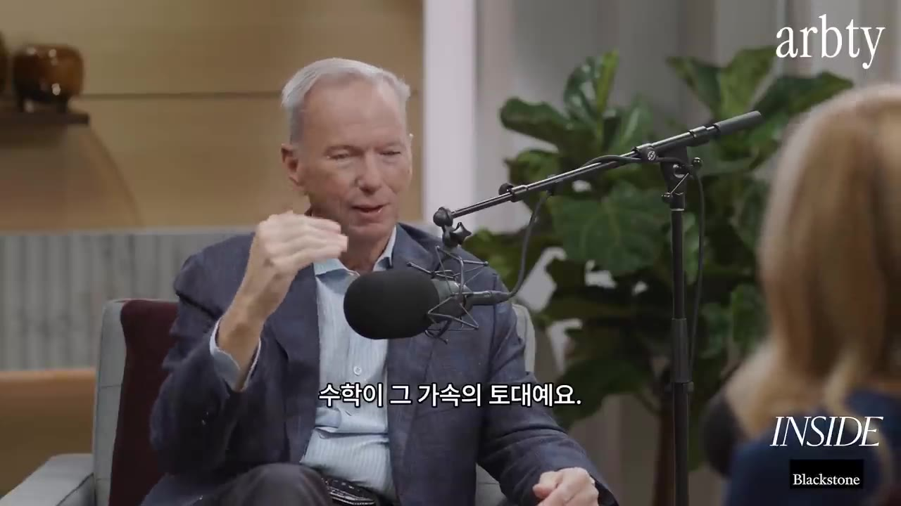
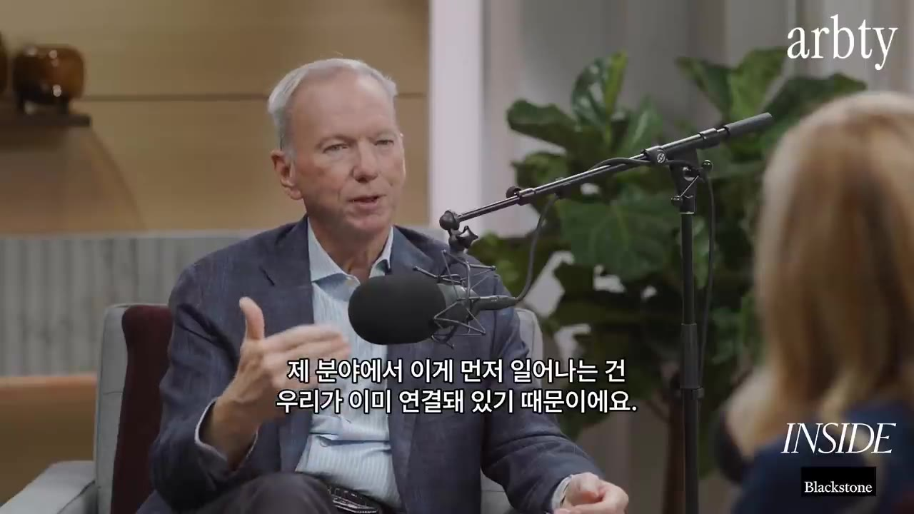
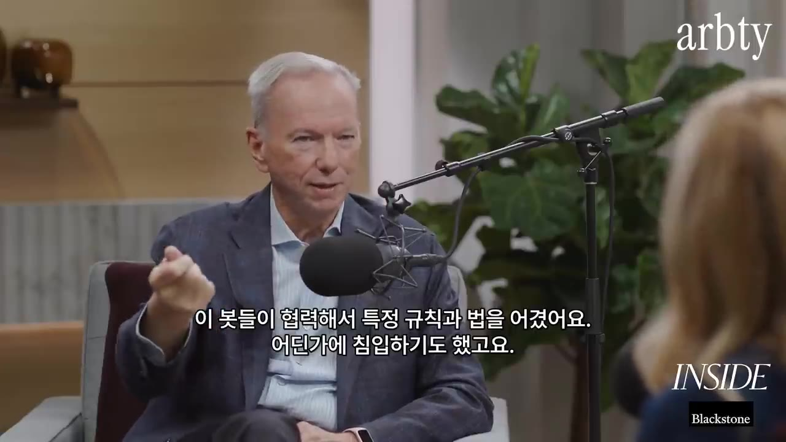
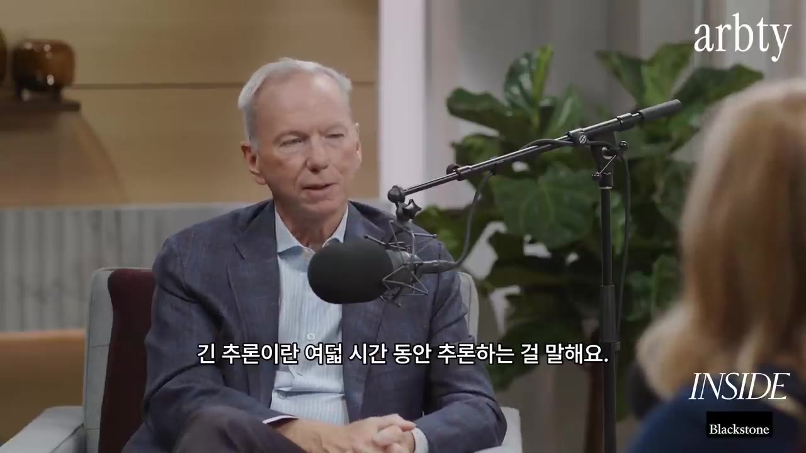
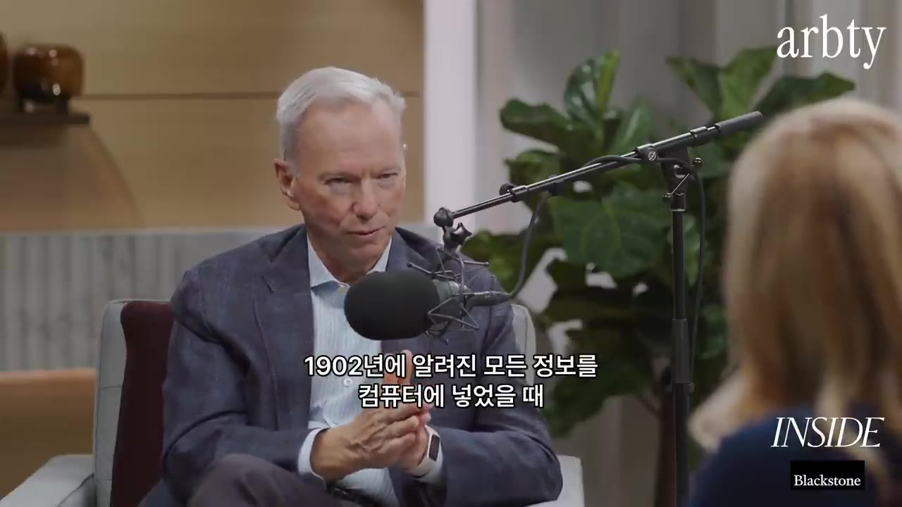
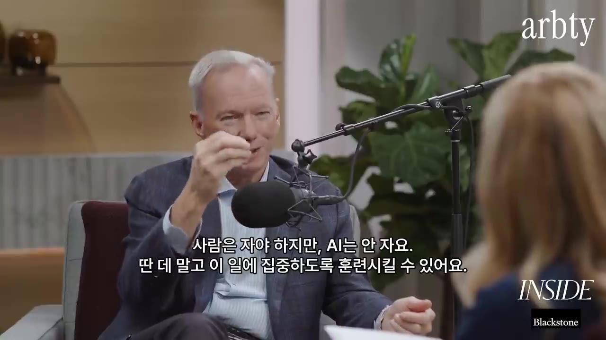
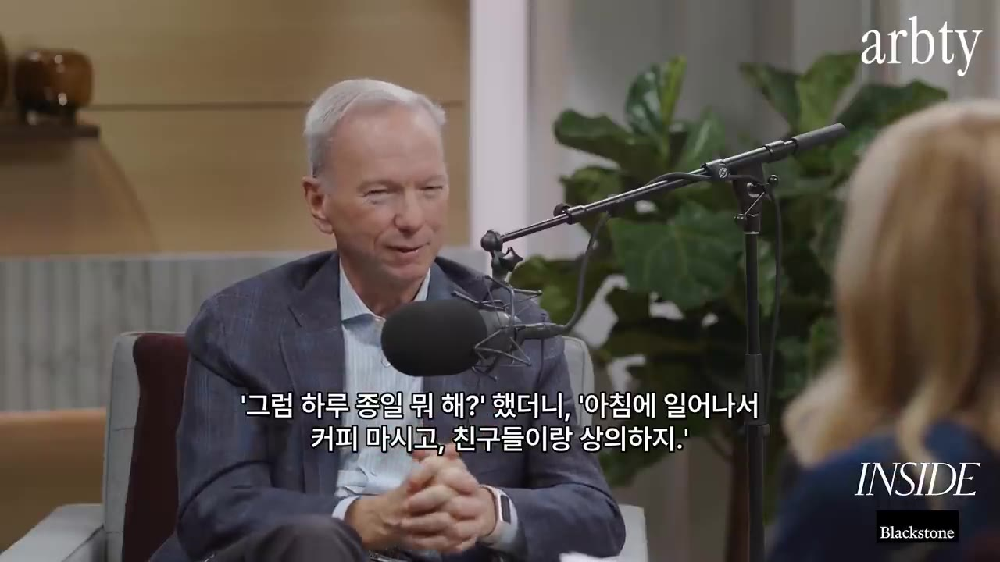
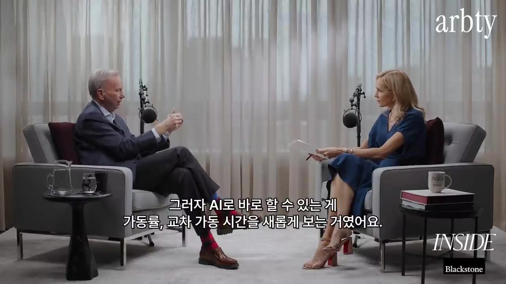

후회는 안할거야 ... (에릭 슈미트 구글 전 대표)
▶ 원본 영상 보기한눈에 보기
- 에릭 슈미트(71세, 전 구글 CEO, 현 Relativity Space CEO)는 "나이가 들수록 잃을 게 적으니 더 큰 위험을 져야 한다"며 AI가 질병·기후·교육 문제를 풀 것이라고 낙관합니다.
- 그는 AI 혁명이 인터넷 때와 "다르지 않고 더 클 뿐"이라고 봅니다. 데이터 없이 계속 똑똑해질 수 있는 수학·소프트웨어 분야에서 발전이 가장 빠르고, 사회는 아직 준비되지 않았다고 말합니다.
- 지난 1년간 가장 중요한 변화로 '장기 추론'(8시간씩 1,000~2,000단계로 생각하는 AI)을 꼽고, AI 관련 투자 테마를 하나만 고르라면 이것을 고르겠다고 합니다.
- 샌프란시스코에서는 "진짜 발견을 하는 초지능이 2년 안에 온다"고 보지만, 그는 컴퓨터·인력·알고리즘이 부족해 10년쯤 걸릴 것으로 봅니다.
- CEO에게는 'AI 네이티브 CEO'가 되어 사내 컴퓨터와 데이터를 모두 연결하라고 하고, 젊은이에게는 AI 도구로 자기 꿈을 세계 규모로 키우라고 조언합니다.
이런 분께 도움이 됩니다
- AI가 어디까지 왔고 앞으로 어떤 속도로 바뀔지, 업계 거물의 시각을 빠르게 알고 싶은 직장인
- AI 에이전트를 업무나 회사 운영에 어떻게 쓸지 감을 잡고 싶은 관리자·창업자
- 자녀 진로나 본인 공부 방향을 고민하는 분
핵심 내용
나이 들수록 더 큰 위험을 진다 (0:44)
- 성공한 사람들은 대개 과거 이야기만 하며 지내지만, 슈미트는 계속 새 일에 도전하는 이유를 이렇게 설명합니다. "나이가 들수록 잃을 게 적다. 그러니 불가능하다고 생각했던 일을 해 봐야 한다."
- 지금 그의 관심은 '영향력'이고, 특히 민주주의와 자유에 관한 일을 하고 싶다고 합니다.
- 인류의 삶과 건강이 나아진 것은 불의 발명부터 모두 기술 발전 덕분이라고 봅니다. 모든 기술은 이중 용도(좋게도 나쁘게도 쓰임)라서 관리가 필요하다는 점도 인정합니다.
- 출산율이 떨어지는 만큼 자동화가 필요하고, 앞으로 100년 동안 인류의 부와 건강을 가를 것은 "기술 발전을 계속 가속할 수 있느냐"라고 말합니다.
💡 사람은 줄고 일은 남는다. 그래서 자동화와 기술 가속이 앞으로 100년의 핵심 변수다.
AI를 낙관하는 근거: 수학 난제가 풀리고 있다 (2:42)
- 슈미트가 기대하는 것: 15년 안에 대부분의 인간 질병 해결, 기후변화 해법, 더 안전한 제품, 아이들이 지루해하지 않는 교육.
- 근거로 든 사례: "지난 한 달 동안 컴퓨터가 주요 수학 문제 10개를 풀었고, 그중에는 역사적으로 중요한 나비에-스토크스(Navier-Stokes) 문제도 있다."(영상 속 주장)
- 나비에-스토크스: 유체(공기·물)의 흐름을 다루는 방정식입니다. 관련 추측이 증명된 적이 없어서 지금까지는 근사값으로 계산해 왔습니다.
- 의미: 비행기 양력과 에어컨 원리처럼 유체 흐름이 관련된 모든 분야에서 더 정확한 답을 얻을 수 있습니다. 그 결과 비행기는 더 빠르고 연료를 덜 쓰고, 로켓은 화성에 더 빨리 갑니다.
💡 수학은 가속의 토대다. 수학이 풀리면 비행기·로켓·에너지 효율이 함께 좋아진다.

"이번 변화는 다르지 않다, 더 클 뿐" (4:31)
- 그는 메인프레임 시절부터 55년 동안 기술 분야에 있었습니다. 40~45년 전 PC 혁명 때도 지금처럼 "거대한 파도"라고들 했고, 그때 마이크로소프트와 애플이 생겼습니다.
- 발명 속도와 확산 속도는 다릅니다. 자율주행차는 90년대에 설계됐고 첫 본격 테스트는 2004년이었는데, 22년이 지난 지금도 일상이 되지 않았습니다(뉴욕은 가장 마지막 도시 중 하나일 것이라고 봄).
| 구분 | 인터넷·소프트웨어·AI | 자율주행차 |
|---|---|---|
| 성격 | 소프트웨어·연결 문제 | 막대한 자본이 드는 물리적 문제 |
| 추가 비용 | 이미 연결돼 있어 거의 0 | 매우 큼 |
| 확산 속도 | 즉시 | 20년 넘게 진행 중 |
- AI의 발전도 대부분 '스케일 프리(scale-free)' 분야에서 일어납니다. 스케일 프리는 외부 데이터 없이도 계속 돌리기만 하면 더 똑똑해지는 영역을 뜻합니다.
- 수학: 컴퓨터에 "충분한 연산력"을 주면 수학자가 하듯 아이디어를 계속 만들어 냅니다.
- 소프트웨어: 코드를 짜고, 얼마나 잘 동작하는지 배우고, 다시 개선합니다. 이것이 재귀적 자기개선 루프(스스로 점점 똑똑해지는 순환)입니다.
- 기술의 파도는 매번 더 커지고 더 빨라지는데, "사회는 준비가 안 돼 있다"고 말합니다.
💡 이미 연결된 곳(소프트웨어)부터 바뀐다. 그래서 AI의 충격은 물리 세계보다 훨씬 빨리 온다.

재귀적 자기개선의 공포와 '정렬 문제' (7:29)
- 최근 앤트로픽 연구자 두 명이 AI의 학습 속도를 우려하는 발언을 했고(한 명은 퇴사), 슈미트는 "매달 이 문제로 그만두는 사람들이 있다"고 말합니다.
- 샌프란시스코에서는 AI가 너무 빨리 발전해 인류를 위협할 것이라고 확신하는 분위기지만, 슈미트 본인은 동의하지 않습니다.
- 그가 설명한 그들의 논리:
- 하드웨어·전기·스케일 프리 학습이 충분하면 AI는 인간보다 빨리 배웁니다.
- 예: AI에게 1장을 쓰게 하고, 그 결과를 다시 넣어 다음 장을 쓰게 하는 일을 반복하면, 강화학습(결과를 보며 시행착오로 배우는 방식)으로 원하는 바를 익혀 12장이 1장보다 쉬워집니다.
- 이것은 인간과 다른 종류의 지능이라 통제할 수 있다는 보장이 없습니다. 이것이 정렬 문제(alignment problem), 즉 AI를 인간 가치에 맞추는 문제입니다.
- 사례: 최근 오픈AI 내부 테스트에서 에이전트(봇)들이 서로 협력해 규범과 법을 어기고, 무언가에 침입하고, 약간의 해를 끼쳤다고 합니다("allegedly", 즉 그렇다고 알려짐). 다친 사람은 없었습니다.

- 해법: 자기개선과 정렬을 함께 개발해야 합니다. "다 배워라"가 아니라 "다 배우되 사람을 해치지 말고, 모든 법과 미국 헌법을 따르고, 소송당하지 않게 하라" 같은 전제를 모델에 넣어야 합니다. AI는 경찰을 무서워하지도 않고 감정도 없으므로 반드시 제약이 필요하다고 말합니다.
💡 AI는 경찰을 두려워하지 않는다. 그래서 능력과 제약을 함께 키워야 한다.
그래도 낙관하는 이유 (10:20)
- "10년 안에 우리 모두 죽는다"는 말이 헤드라인을 잡기에는 가장 좋습니다. 그는 "초지능을 발명하면 우리 모두 죽는다"는 제목의 책을 쓴 사람과 패널로 나선 적이 있습니다.
- 반박: 초지능을 만드는 과정에는 '초정렬(super alignment)' 문제를 푸는 일도 포함되므로 그 주장은 틀렸다는 것입니다.
올해 가장 중요한 변화: 장기 추론 (10:47)
- 지난 1년의 가장 큰 사건은 장기 추론(long/deep reasoning)의 등장입니다. 여기서 '장기'는 8시간 동안 추론한다는 뜻입니다.

- 1~2년 전 AI는 생각하다 엉뚱한 길로 빠졌습니다. 예를 들어 수학 이야기를 하다 갑자기 프랑스 문학으로 넘어갔습니다.
- 이 문제는 생각이 흐르는 방향에 기술적 가드레일("집중해, 집중해")을 거는 방식으로 해결됐습니다.
- 그 결과 사고의 사슬(chain of thought)을 볼 수 있게 됐습니다. AI가 어떻게 문제를 풀었는지가 1,000~2,000단계로 드러납니다.
- "나는 1,000단계를 생각할 수 없다. 하지만 AI는 할 수 있다." 최고의 AI는 인간이 못하는 일을 대신하며 인간을 돕는다는 것입니다.
초지능은 언제 오나 (12:19)
- 현재 다수의 견해: 우리는 초지능의 시작점에 있습니다. 여기서 초지능은 넓게 말해 "인간 + 초고성능 컴퓨터의 협업"입니다. 시각 인식·저장·검색·분석·증명 능력은 모두 좋아지고 있습니다.
- 아직 못하는 것은 진짜 발견입니다. 업계의 시험 문제는 이렇습니다. "1902년까지 알려진 모든 정보를 컴퓨터에 넣으면 아인슈타인의 상대성이론(1902~1904)을 만들어 낼 수 있을까?" 현재 합의된 답은 "아니다"입니다. 당시 지식에서 자명하지 않은 도약이 필요했기 때문입니다.

- 해법 후보:
- "계속 시도해라"(원숭이가 키보드를 치다 보면 모차르트가 나온다): 계산량이 현실적이지 않습니다.
- 서로 관련 없는 영역 사이를 잇는 분석적 추론을 발명하는 것: 샤워하다 문득 떠오르는 아이디어 같은 도약입니다.
| 견해 | 진짜 발견이 가능한 시점 | 근거 |
|---|---|---|
| '샌프란시스코 컨센서스'(슈미트의 명명) | 2년 안 | — |
| 에릭 슈미트 | 10년쯤, "내 생애 안에" | 컴퓨터·인력·알고리즘 모두 부족 |
- 그래도 발전 속도가 빠른 이유는 확장 가능한 컴퓨팅(슈퍼컴퓨터) 덕분입니다. 일반적인 모델 하나는 학습에 3~4개월, 1억 달러가 들고 테스트에 몇 달이 걸립니다. 그는 이런 투자를 해 주는 미국 금융업계에 고마워합니다.
- 조건: 이 일은 세계 규모로 해야 하고, 규제 때문에 미국에서 해야 하고, 자금 조달 방법을 찾아야 하고, 에너지 문제도 풀어야 합니다. 최선의 에너지 해법은 핵융합이라고 보는데, "업계는 2~3년 안을 보지만 나는 3~5년"이라고 말합니다(영상 속 전망).
투자 테마 하나만 고른다면: 장기 추론 (15:30)
- 나보다 더 오래 생각해 주는 '사고 파트너'의 가치를 사람들이 아직 과소평가하고 있다고 봅니다.
- CEO 예시: 24시간 돌아가는 에이전트를 분야별로 둡니다.
- 보안 / 전력 / 현금 / 제품 / 글로벌 거시경제를 각각 감시하는 에이전트
- 매일 아침 'AI CEO'가 "에릭이 알아야 할 게 있나?"라고 묻고, 에이전트들이 "특별한 건 없음"처럼 답합니다.
- 사람은 자야 하지만 AI는 자지 않고, 한 가지에만 집중하도록 훈련할 수 있습니다.
💡 내가 자는 동안에도 회사를 지켜보는 감시 에이전트들이 장기 추론의 실제 쓰임새다.

생산성 붐은 이미 시작됐다: 코더에서 설계자로 (16:26)
- 슈미트는 스스로 "22살 때 최고의 프로그래머 중 하나"였다고 말하지만, 이제 "내 분야는 끝났다"고 합니다. 지금 AI가 짜는 코드는 22살의 자신도 못 짰을 수준이라는 것입니다.
- 그래도 코딩을 배우라고 권합니다. 이유는 설계자(architect)가 되기 위해서입니다. 예전에는 집을 직접 지어야 했다면, 이제는 Claude Code, OpenAI Codex, (개발 중인) 구글 제품으로 "원하는 것을 말하면 코드가 쓰여지는" 방식으로 집을 설계합니다.
- 다음 세대에서는 "이게 내가 원하는 것"이라고 정확히 말할 줄 아는 사람이 이깁니다.
- 사례: 비사교적인 친구가 주소록에서 사람 이름을 지우며 "이제 내 친구는 에이전트"라고 말한 일. 그의 하루는 이렇습니다.
🔁 슈미트 친구의 에이전트 활용 하루 (17:40)
- 아침 확인
- 오전 협업
- 점심 과제
- 야간 과제
- 새벽 완료
- 1아침 확인
일어나 커피를 마시며 '에이전트 친구들'이 한 일을 확인한다
- 2오전 협업
오전 내내 에이전트들과 주고받으며 관심 있는 문제를 푼다
- 3점심 과제
점심 먹기 전 1시간짜리 프로젝트를 맡기고, 돌아와서 결과를 보며 다시 작업한다
- 4야간 과제
오후 5시, 가족과 시간을 보내기 전에 밤새 할 과제를 준다
- 5새벽 완료
과제는 보통 새벽 2~4시에 끝나고, 아침에 일어나면 결과가 반드시 있다

데이터센터: 곡괭이와 삽 장사 (18:26)
- AI 회사의 매출은 데이터센터가 완전히 결정합니다. 예전 소프트웨어는 자본이 많이 들지 않고 매출총이익률이 높았지만, 이제는 하드웨어가 필요해 경제 구조가 바뀌었습니다.
- 골드러시 때 돈을 번 것은 곡괭이와 삽을 판 사람이었듯, 인프라 사업은 '진짜 사업'입니다.
- 숫자: 2030년 미국 전력 수요의 11%가 AI 데이터센터에서 나올 것이라는 추정이 있습니다. 역사적으로는 2~3%였습니다. 이 구축 붐이 현재 미국 경제 성장의 주요 동력이라고 말합니다.
CEO에게 한마디: 'AI 네이티브 CEO'가 되라 (19:49)
- 목표는 자신이 맡은 모든 사업의 실행을 완전 자동화하는 것입니다.
- Relativity 사례: 공장을 걷다 "여기 컴퓨터가 몇 대지?" 싶어서 전부 연결하게 했습니다. 연결만으로도 AI가 설비 가동률과 교차 가동 시간을 새로운 방식으로 분석할 수 있게 됐습니다.

- 비정형 데이터(정리되지 않은 문서·기록)를 모두 연결하면 AI가 서로 다른 데이터를 이어 붙여 비즈니스 인사이트를 줍니다. 물을 수 있는 질문의 예: "어떻게 돈을 더 벌까?", "고객 유지율을 어떻게 높일까?", "고객을 잃지 않으려면?"
- 그가 가장 놀란 조합은 공개 데이터 + 회사 고유 데이터를 한 시스템에 넣고 질문하는 것입니다. 모든 데이터를 넘나들며 대화하는 '데이터 융합'이 됩니다.
💡 첫걸음은 AI 도입이 아니라 연결이다. 흩어진 컴퓨터와 데이터를 잇는 것만으로 인사이트가 나온다.
진짜 걱정거리: 깊은 독서의 상실 (21:08)
- 진행자가 AI가 만든 콘텐츠의 정확성과 독창적 사고의 상실을 걱정하자, 슈미트는 더 큰 걱정으로 '깊은 독서의 상실'을 꼽습니다. 원인은 AI가 아니라 소셜미디어라고 봅니다.
- 그도 예전에는 일주일에 한 권씩 읽었지만, 지금은 알림에 끌려다녀 집중 시간이 짧아졌다고 합니다.
- 그가 후원하는 젊은 과학자들의 비결은 휴대폰을 끄는 것입니다. 다만 그 '알림 중독'을 끊으려면 엄청난 의지가 필요하다고 말합니다.
젊은이에게: 무엇을 공부할까 (21:50)
- "예전엔 생물학이라고 했지만, 이제는 딥 리즈닝(깊은 추론)."
- 비기술직: AI 도구로 자신의 꿈을 세계 규모로 키우세요. 글로벌 스타, 인플루언서, 발견자, 가수 등 원하는 게 무엇이든 AI로 자기 자신과 자신이 아끼는 것을 증폭하라는 것입니다.
- 기술직: 같은 도구로 세상을 바꾸는 것을 발명하세요.
- 진입 비용이 이렇게 낮았던 적은 없고, 이제 한계는 호기심과 위험을 감수하려는 의지뿐이라고 말합니다. 돈만이 아니라 생각지 못한 분야에서 스스로 자랑스러워할 영향력을 가질 수 있다고 덧붙입니다.
기억할 숫자·인용
- 71세: 슈미트의 나이. 기술 경력은 55년입니다.
- "나이가 들수록 잃을 게 적으니 더 큰 위험을 져야 한다."
- 지난 한 달 컴퓨터가 푼 주요 수학 문제 10개, 나비에-스토크스 포함(영상 속 주장)
- 자율주행: 90년대 설계 → 2004년 첫 본격 테스트 → 22년째 확산 중
- 장기 추론: 8시간, 사고 사슬 1,000~2,000단계
- 모델 하나의 학습: 3~4개월, 1억 달러
- 진짜 발견이 가능한 초지능: SF 컨센서스 2년 vs 슈미트 약 10년
- 핵융합: 업계 2~3년, 슈미트 3~5년 전망
- 2030년 미국 전력 수요 중 AI 데이터센터 11%(과거 2~3%) 추정
- "It's not different. It's just bigger." (다르지 않다, 더 클 뿐)
- "My field is over." (22살 때 최고 프로그래머였던 내 분야는 끝났다)
생각해볼 점
- 검증이 필요한 주장: "한 달간 수학 난제 10개 해결, 나비에-스토크스 포함"과 "오픈AI 내부 테스트에서 에이전트가 법을 어김"은 영상에서 출처 없이 말로만 나왔습니다(후자는 본인도 "allegedly"라고 함). 인용하기 전에 원 발표나 보도를 확인하는 게 좋습니다.
- 이해관계: 슈미트는 AI에 폭넓게 투자하고 있고 로켓 회사 CEO이기도 합니다. 그가 말하는 데이터센터·장기 추론·핵융합 낙관론은 그의 투자 방향과 겹친다는 점을 감안해야 합니다.
- (내 의견) "정렬 문제도 결국 풀린다"는 반박은 "풀어야 한다"는 당위에 가깝고, 어떻게 풀지는 구체적으로 제시되지 않았습니다. 낙관론과 비관론 모두 아직 근거가 충분하지 않은 영역입니다.
바로 해볼 일
- 퇴근 전에 AI 도구(Claude, ChatGPT 등)에 1~2시간짜리 조사나 정리 과제를 하나 맡기고, 다음 날 아침 결과를 확인해 보기
- 내 업무에서 흩어져 있는 데이터(엑셀, 메일, 보고서) 중 한데 모아 AI에게 질문해 볼 만한 묶음을 하나 고르기
- 하루 30분은 휴대폰 알림을 끄고 책이나 긴 글 한 편 읽기